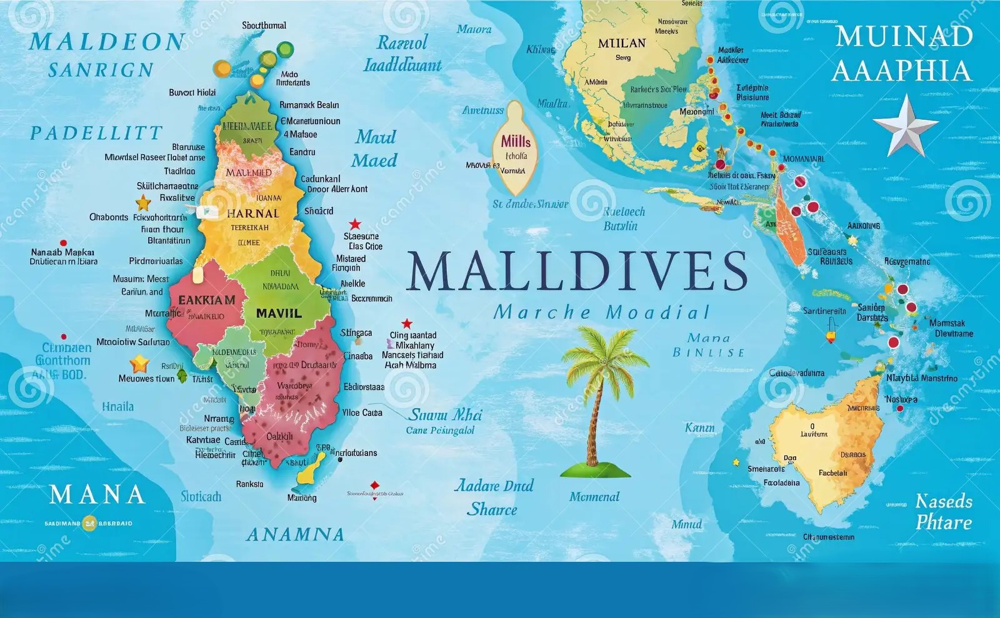
Tổng quan:
Maldives nằm ngay phía dưới Ấn Độ và Sri Lanka thuộc khu vực khí hậu nhiệt đới nên thời tiết quanh năm nóng, khô
- 🌤 Thời điểm đẹp nhất để du lịch Maldives tháng 11 – tháng 4. Thời tiết nắng đẹp, biển trong xanh, ít mưa. Thích hợp tắm biển, lặn ngắm san hô, chụp ảnh.
- ✈️Chuyến bay Từ: Sân bay Quốc tế Dulles (IAD) đến: Malé (Velana International Airport)
- Hãng bay có thể chọn: Singapore Airlines, Qatar Airways, Emirates, Scoot, AirAsia.
- 🕒 Mẹo: Đặt trước ít nhất 4–8 tuần để có giá tốt.
- Tìm các gói bao gồm cả chuyến bay + khách sạn để tiết kiệm (Expedia, Costco Travel, v.v.)
- Tour tại chỗ: Maldives Traveller, Secret Paradise Maldives.
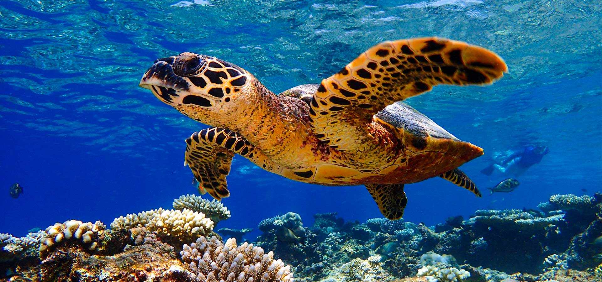
Điểm đến nổi bật ở Maldives .
- Maafushi – Đảo giá rẻ, nhiều homestay, tour ngắm cá mập voi, rùa biển.
- Biyadhoo – Nổi tiếng lặn biển ngắm san hô.
- Male – Thủ đô, nơi dừng chân đầu tiên, có chợ cá, nhà thờ Hồi giáo Grand Friday Mosque.
- Resort islands – Mỗi đảo 1 resort riêng biệt, dịch vụ cao cấp, phù hợp nghỉ dưỡng.
- Ari Atoll – Thiên đường ngắm cá mập voi và lặn bình dưỡng khí.

🏨 Khách sạn/Khu nghỉ dưỡng ở Maldives có nhiều nhà hàng
Soneva Jani
- Biệt thự trên biển với cầu trượt xuống biển, phục vụ riêng.
- 🍽 Ăn uống không giới hạn , thực đơn ẩm thực đa dạng.
- Giá tham khảo /đêm ~2.500 – 5.000 USD. Sang trọng, trăng mật
- Website

Baros Maldives
- Gần sân bay, bãi biển đẹp, lặn biển & lặn ống thở tuyệt vời
- Giá tham khảo /đêm ~800 – 1.500 USD. Cặp đôi, honeymoon.
- Website

Hurawalhi Island Resort
- Lãng mạn, nghỉ ngơi yên tĩnh resort chỉ dành cho người lớn
- Giá tham khảo /đêm ~900 – 1.800 USD
- Nhà hàng 5.8 Undersea nổi tiếng, nhiều nhà hàng, vừa cao cấp vừa casual
- Website

Centara Grand Island Resort & Spa
- Dành cho gia đình, cặp đôi
- All-inclusive rất toàn diện: ăn uống, tour snorkeling, massage
- Giá tham khảo /đêm ~500 – 900 USD
- Website

📌 Lưu ý chung khi chọn resort all-inclusive
- Kiểm tra gói bao gồm gì: Có nơi bao gồm cả tour ngắm cá heo, snorkeling, kayak; có nơi chỉ bao gồm ăn uống.
- Chọn đảo gần hoặc xa sân bay: Đảo gần tiện đi speedboat, đảo xa thường phải đi thủy phi cơ (tốn thêm $300–600/người).
- Xác định phong cách: Muốn yên tĩnh, lãng mạn → resort adults-only
- Muốn vui nhộn, nhiều hoạt động → resort có nhiều nhà hàng và thể thao biển
- Đặt sớm mùa cao điểm: Ít nhất 6 tháng trước để có giá tốt và phòng đẹp.
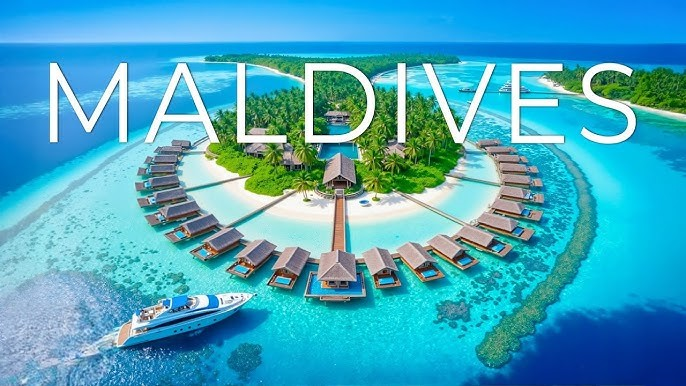
Dưới đây là hướng dẫn từng bước hoàn chỉnh cho chuyến đi 5 ngày du lịch của bạn từ Fairfax, VA đến Maldives
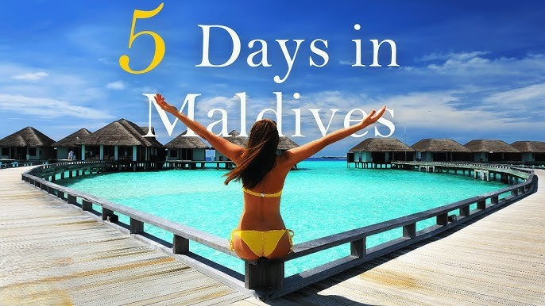
🎒Chuẩn bị
- Giấy tờ cần thiết: Nếu bạn là công dân Mỹ không cần passport khi bay nội địa giữa các đảo.
- Vé máy bay khứ hồi. Giấy xác nhận đặt khách sạn
- Đặt vé trước: Haleakalā (sunrise at summit) yêu cầu reservation cho xe/khách để xem bình minh; phải đặt qua Website Nếu không có vé, có thể vào sau 7:00 AM nhưng sunrise cần vé.
- USS Arizona / Pearl Harbor đặt vé qua Website
- Book khách sạn & nhà hàng. Chọn khách sạn có nhiều nhà hàng nội khu nếu bạn thích ăn uống đa dạng (gợi ý: Halekulani, Aulani, Grand Wailea, Four Seasons Hualālai
- Phương tiện di chuyển: Nếu muốn tự lái: đặt xe thuê sớm (đặc biệt mùa cao điểm). Lưu ý phí “young driver”, quy định seatbelt, giới hạn tốc độ, bảo hiểm bắt buộc. Nếu chỉ ở Waikiki: có thể không cần thuê xe, đi bộ + taxi/ride-share + tour.
- Kem chống nắng SPF50+, mũ, kính râm, đồ bơi, dép/chạy bộ, áo nhẹ cho chiều tối, bộ sơ cứu cá nhân, thuốc say tàu/thuyền. Ổ cắm/adapter, pin dự phòng, túi chống nước cho điện thoại.
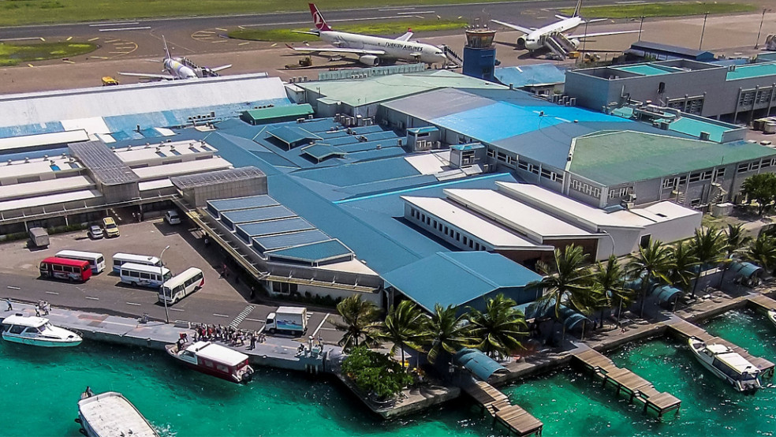
📅 Ngày 1: Đến Maldives & Check-in Resort
- Sáng: ✈️Hạ cánh sân bay Malé (Velana International Airport)
- Chuyển tiếp đến resort bằng thủy phi cơ hoặc speedboat (tùy vị trí đảo).
- Trưa: Ăn trưa tại nhà hàng buffet chính của resort.
- Chiều: Tắm biển hoặc thư giãn bên hồ bơi. Chụp ảnh hoàng hôn ở bãi biển riêng.
- Tối: Dùng bữa tối tại nhà hàng hải sản (trong gói all-inclusive). Ngắm sao hoặc xem show giải trí tại resort
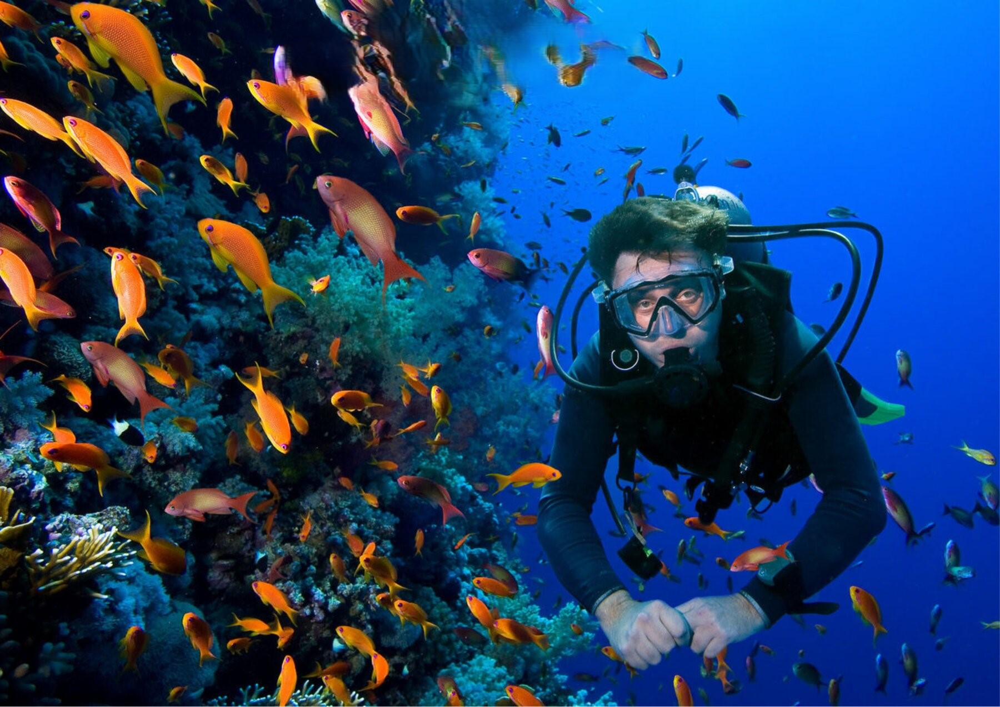
📅 Ngày 2: Snorkeling & Thư giãn Spa
- Sáng: Đi tour snorkeling ngắm san hô và cá nhiệt đới (thường bao gồm trong gói).
- Trưa: Ăn tại nhà hàng phong cách quốc tế.
- Chiều: Thư giãn với liệu trình spa (nhiều resort tặng 1–2 lần miễn phí). Tự do tắm nắng, bơi hoặc paddle board.
- Tối: Ăn tối BBQ ngoài trời hoặc tại nhà hàng Ý/Nhật của resort.
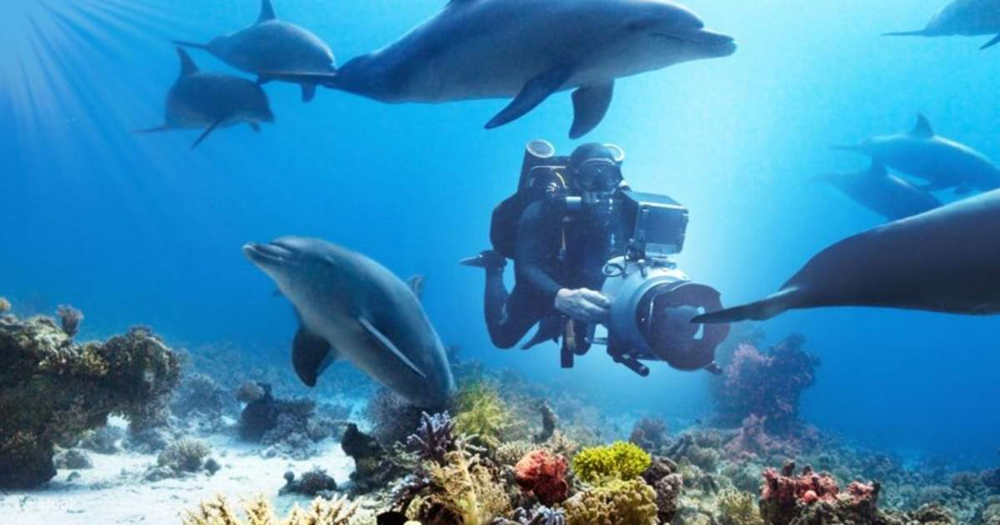
📅 Ngày 3:Ngắm cá heo & Lặn bình khí (Scuba Diving)
- Sáng: Tham gia tour ngắm cá heo hoặc cá mập voi (whale shark watching).
- Trưa: Picnic trên bãi cát giữa biển (nhiều resort tổ chức).
- Chiều: Lặn bình khí (có huấn luyện viên nếu chưa có chứng chỉ).
- Tối: Ăn tối tại nhà hàng dưới nước (nếu resort có, như Hurawalhi 5.8 Undersea).
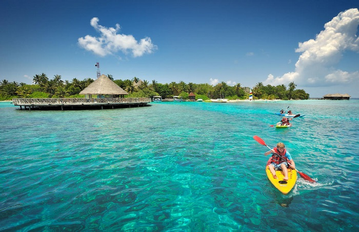
📅Ngày 4: Khám phá đảo & Hoạt động giải trí
- Sáng: Tham gia lớp yoga buổi sáng bên biển. Chèo kayak hoặc đi catamaran.
- Trưa: Thưởng thức hải sản tươi tại nhà hàng.
- Chiều: Tham quan đảo địa phương gần resort (Local Island Tour).
- Tối: Private dinner trên bãi biển (romantic dinner setup).
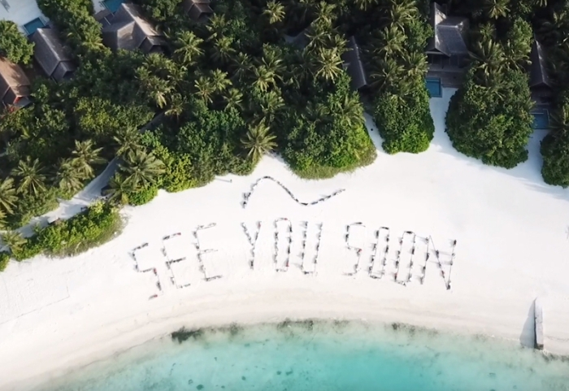
📅Ngày 5: Tạm biệt Maldives
- Sáng: Ăn sáng, chụp ảnh cuối cùng.
- Check-out và di chuyển về sân bay Malé.
- Trưa/Chiều: Bay về Fairfax VA
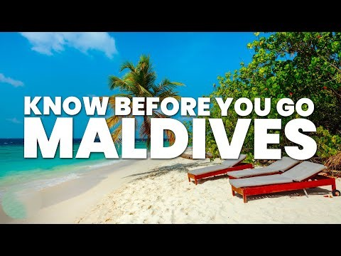
⚠️ Lưu ý riêng khi ở Maldives
- Là quốc gia Hồi giáo → Trang phục lịch sự khi ở đảo dân sinh (không bikini ngoài bãi tắm riêng).
- Giá cả dịch vụ trên resort thường cao hơn đất liền.
- Không được mang rượu vào quốc gia này (resort có phục vụ).
- Luôn đặt tour qua dịch vụ uy tín để đảm bảo an toàn khi ra đảo xa.
- Giữ hộ chiếu và giấy tờ quan trọng trong két an toàn của khách sạn; scan lưu bản mềm trên email hoặc cloud.
- Luôn kiểm tra dự báo thời tiết (mùa mưa ở Maldives thường từ tháng 5–11).
- Giữ hộ chiếu và giấy tờ quan trọng trong két an toàn của khách sạn; scan lưu bản mềm trên email hoặc cloud.
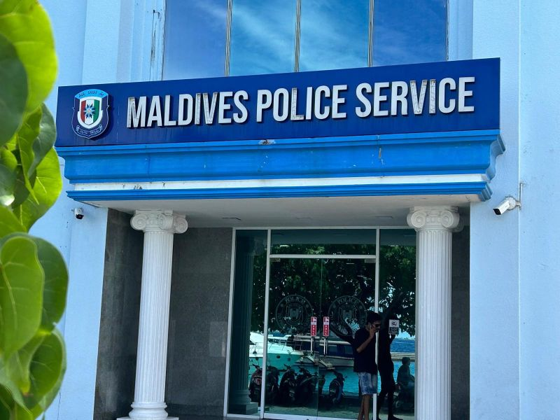
Nếu bạn cần hỗ trợ ở Maldives
- Ở Maldives không có Đại sứ quán/Lãnh sự quán Hoa Kỳ
- Đại sứ quán Hoa Kỳ tại Colombo, Sri Lanka
- Điện thoại khẩn: +94 11 249 8500 (hoạt động 24/7 cho công dân Mỹ gặp sự cố khẩn cấp). Website
- Trước khi đi, hãy đăng ký chuyến đi tại: Website, nếu có sự cố (thiên tai, biểu tình, dịch bệnh…), Đại sứ quán sẽ dễ dàng liên lạc và hỗ trợ bạn.
- Số khẩn cấp: Cảnh sát: 119
- Cấp cứu y tế: 102
- Cứu hỏa: 118
- Sân bay quốc tế Velana (Male): +960 332 3506